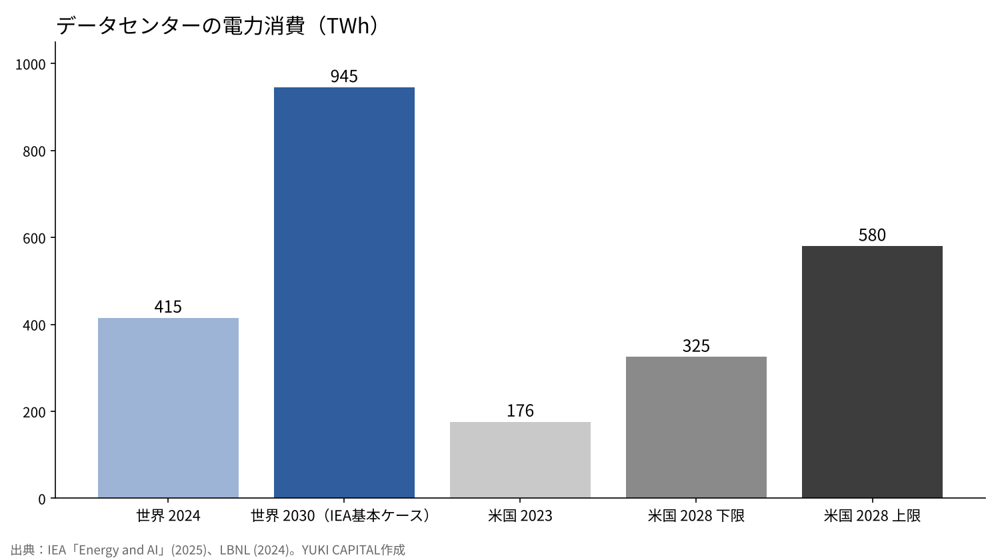
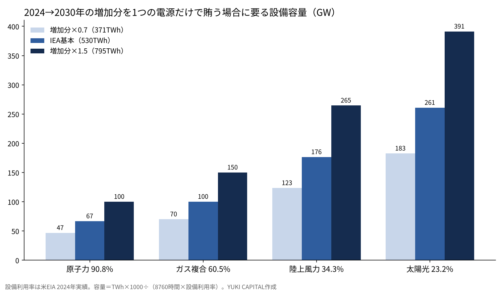

AIの電力は2030年までにどこまで増え、どの電源で賄えるのか――再エネ・原子力・火力・核融合を数字で並べる
国際エネルギー機関（IEA）は、世界のデータセンターが2024年に使った電力を約415TWhと推計している。世界の電力消費の約1.5%にあたる[1]。
同じ推計の基本ケースでは、2030年にこれが約945TWhへと2倍あまりに増える。増える分は約530TWhで、AIの普及がその主な理由とされる[1]。
本稿の問いは1つに絞る。この約530TWhの増加分を、再生可能エネルギー・原子力・火力・核融合のそれぞれが、どれだけの設備で、いつまでに賄えるのか。結論は決めず、数字だけを並べる。

問いと背景
最初に、本稿で使う言葉を3つ定義しておく。TWh（テラワット時）は電力量の単位で、10億kWhにあたる。設備利用率とは、1年間に実際に発電した量を、最大の出力で1年中動かし続けた場合の発電量で割った比率を指す。LCOE（均等化発電原価）とは、発電所の建設・運転・燃料・廃止までの費用を、生涯の発電量で割った1MWhあたりの費用である[5]。
2024年の約415TWhは世界の電力消費の約1.5%にすぎず、地域ごとに見ると米国が45%、中国が25%、欧州が15%を占める[1]。
米国のエネルギー省が公表したローレンス・バークレー国立研究所（LBNL）の報告では、米国のデータセンターの電力消費は2014年の58TWhから2023年に176TWhへ増え、国全体の4.4%に達した。2028年には325〜580TWh、国全体の6.7〜12%になると推計している[2]。
日本では、2025年2月18日に閣議決定された第7次エネルギー基本計画が、2040年度に必要な発電電力量を最大で約1.2兆kWh、2023年度の約1.2倍と見込んだ。理由として、データセンターと半導体工場の新設・増設を挙げている[3]。同じ計画は2040年度の電源構成を、再エネ4〜5割程度、原子力2割程度、火力3〜4割程度としている。2023年度の実績は、再エネ22.9%、原子力8.5%、火力68.6%だった[3]。
データと方法
需要の側は、IEAの「Energy and AI」の基本ケース（2024年と2030年）と、LBNLの米国の推計（2023年と2028年）の2つに限る[1][2]。電源の側は、4つの物差しで並べる。米国エネルギー情報局（EIA）が公表した2024年の設備利用率[4]、Lazardが2025年6月に公表した補助金なしのLCOE[5]、IPCCの第5次評価報告書がまとめたライフサイクルの温室効果ガス排出量の中央値[6]、そしてEmberが集計した2025年の世界の発電量[7]である。
原子力の建設の進み具合は、世界原子力協会の2026年10月23日時点の一覧[8]とIEAの「Global Energy Review 2026」[9]、核融合はローレンス・リバモア国立研究所（LLNL）[10]、ITER機構[11]、核融合産業協会（FIA）[12]の公表資料で確かめる。
計算は1つだけにする。2024年から2030年の増加分を、仮に1つの電源だけで賄うとき、何GWの設備が要るかを「設備容量（GW）＝電力量（TWh）×1000÷（8,760時間×設備利用率）」で出す。実際の電源は組み合わせで使われるため、この値は電源どうしの大きさを比べるための目安にあたる。
結果：需要はどこまで増えるのか
| 対象 | 年 | 電力消費 | 国・世界に占める比率 | 出典 |
|---|---|---|---|---|
| 世界のデータセンター | 2024年 | 約415TWh | 約1.5% | IEA[1] |
| 世界のデータセンター | 2030年（基本ケース） | 約945TWh | ― | IEA[1] |
| 米国のデータセンター | 2023年 | 176TWh | 4.4% | LBNL[2] |
| 米国のデータセンター | 2028年（推計） | 325〜580TWh | 6.7〜12% | LBNL[2] |
| 日本の発電電力量（全体） | 2040年度（見通し） | 最大約1.2兆kWh | 2023年度の約1.2倍 | 第7次エネルギー基本計画[3] |

世界の増加分は2024年から2030年の6年間で約530TWhになる。米国だけでも、2023年から2028年の5年間で149〜404TWh増える計算になる。

結果：4つの電源を数字で並べる
| 電源 | 設備利用率（米国2024年） | LCOE 補助なし（ドル/MWh） | ライフサイクル排出（gCO2/kWh・中央値） | 規模の数字 |
|---|---|---|---|---|
| 太陽光（大規模） | 23.2% | 38〜78 | 48 | 2025年の世界の発電2,778TWh、1年で+636TWh |
| 陸上風力 | 34.3% | 37〜86 | 11 | 2025年に世界で+205TWh |
| 原子力 | 90.8% | 141〜220 | 12 | 建設中79基・86.6GW（うち中国38基） |
| ガス（複合サイクル） | 60.5% | 48〜109 | 490 | 2025年の世界の発電の21.8%、+36TWh |
| 石炭 | 42.6% | 71〜173 | 820 | 2025年の世界の発電の33.0%（10,476TWh）、−63TWh |
出典：設備利用率はEIA[4]、LCOEはLazard[5]、排出量はIPCC[6]、規模はEmber[7]と世界原子力協会[8]。
太陽光と風力は、2025年の1年間だけで合わせて841TWh増えた。再エネ全体は世界の発電の33.8%にあたる10,730TWhとなり、石炭の33.0%を初めて上回った[7]。発電量の伸びだけを見れば、6年分の需要の増加分530TWhを1年で上回る規模で増えている。
一方で、データセンターは昼も夜も同じように電力を使う。太陽光の設備利用率は23.2%で、残りの時間は蓄電池か別の電源で埋める必要がある。Lazardの同じ報告では、蓄電池の4時間分の均等化費用は1MWhあたり145〜319ドルとされている[5]。
原子力は、建設中の79基・86.6GWがすべて動き、設備利用率90.8%で発電すると、1年に約689TWhになる。2030年までの増加分530TWhを上回る量にあたる。ただし建設中の容量の約半分は中国にあり[9]、完成の時期は炉ごとに異なる。IEAは、2025年に新たに送電網へ接続された原子力が約3GW、同じ年の廃止も約3GWで、世界の容量は420GWだったとしている[9]。
ガスと石炭は、すでに世界の発電の半分あまりを占める。2025年には石炭が63TWh減り、ガスは36TWh増えた[7]。ライフサイクルの排出量は、石炭が1kWhあたり820g、ガスが490gで、原子力の12g、風力の11gの数十倍にあたる[6]。
結果：核融合はいまどこにいるのか
核融合とは、軽い原子核どうしを融合させ、そのときに出るエネルギーを取り出す方式を指す。LLNLの国立点火施設（NIF）は、2025年4月7日の実験で、標的に当てたレーザー2.08MJに対して8.6MJの核融合エネルギーを得た。利得は4.13で、2024年2月の5.2MJを上回る記録である[10]。この利得は標的に届いたレーザーのエネルギーとの比で、施設全体が使う電力との比ではない。
国際共同で建設中のITERは、2024年7月に示した新しい計画で、研究運転の開始を2034年、重水素どうしの運転を2035年、重水素と三重水素の運転の開始を2039年とした[11]。目標は、50MWの加熱で500MWの熱出力を400秒間出すことにある。ITERは発電して電力を売る施設として設計されていない。
民間では、FIAの2025年の報告で、53社への調査の累計の資金調達額が97.66億ドル、直近12か月の調達が26.4億ドルだった。送電網に電力を初めて送る時期について、53%が2035年まで、84%が2030年代の末までと答えている[12]。2030年までの増加分530TWhに対して、公表されている計画の中で核融合が送る電力は0TWhである。
感度分析
需要の増加分を、IEAの基本ケースの0.7倍（371TWh）、1.0倍（530TWh）、1.5倍（795TWh）の3通りに動かし、4つの電源の設備利用率とかけ合わせて12通りの必要な設備容量を出した。

| 増加分 | 原子力（90.8%） | ガス複合（60.5%） | 陸上風力（34.3%） | 太陽光（23.2%） |
|---|---|---|---|---|
| 371TWh（×0.7） | 47GW | 70GW | 123GW | 183GW |
| 530TWh（基本） | 67GW | 100GW | 176GW | 261GW |
| 795TWh（×1.5） | 100GW | 150GW | 265GW | 391GW |
同じ電力量を賄うのに要る設備は、太陽光が原子力の約3.9倍、陸上風力が約2.6倍、ガス複合が約1.5倍になる。この倍率は設備利用率の比で決まるため、需要の前提を動かしても変わらない。動くのは絶対値で、基本ケースの原子力67GWは、需要が1.5倍になると100GWになる。建設中の原子力86.6GWは、基本ケースの67GWを上回り、1.5倍の100GWには届かない。
考察
反対の見方は2つある。1つは、効率が上がって需要が推計より小さくなるという見方である。LBNLの推計の下限325TWhは、上限580TWhの56%にとどまる[2]。もう1つは、推計が小さすぎるという見方で、米国の上限をそのまま使うと、米国だけで世界の6年分の増加分の7割を超える。
本稿の数字には限界がある。設備利用率とLCOEは米国の値で、日本や中国では異なる。LCOEには送電網の増強や、出力の変動を埋める費用が入っていない[5]。排出量の中央値は2014年までの研究をまとめたもので[6]、技術の改良の分は反映されていない。1つの電源だけで賄う計算は、電源の組み合わせ、データセンターの立地、送電網への接続を待つ時間を考えていない。
答え合わせの基準は4つになる。IEAの次の推計で2030年の値が945TWhからどちらに動くか。米国の2028年の実績が325〜580TWhのどこに入るか。建設中の原子力86.6GWのうち、2030年までに何GWが動き出すか。そしてITERが2034年の研究運転の開始を守れるかである。
結論
数字だけを並べると、こうなる。世界のデータセンターの電力は、2024年から2030年に約530TWh増える。これを1つの電源で賄うには、原子力なら67GW、ガス複合なら100GW、陸上風力なら176GW、太陽光なら261GWの設備が要る。太陽光と風力は2025年の1年だけで841TWh増え、建設中の原子力は動けば年に約689TWhを出す。核融合は、公表されている計画の中では2030年までの増加分に0TWhである。
僕はこう見ている
僕は原子力に賛成の立場をとっている。それでもこの記事では、どの電源が良いかを決めず、数字だけを並べることにした。
僕が持っているSpaceXは、計算能力を2027年末までに13GW超へ増やす計画を示している[13]。13GWが1年中動き続けると約114TWhで、世界の6年分の増加分の約2割にあたる。僕がこれから見ていくのは、IEAの次の推計、米国の2028年の実績、ITERの2034年の予定の3つの数字である。
出典
- IEA「Energy and AI」2025-04-10 https://www.iea.org/reports/energy-and-ai
- U.S. Department of Energy / Lawrence Berkeley National Laboratory「2024 United States Data Center Energy Usage Report」2024-12-20 https://www.energy.gov/articles/doe-releases-new-report-evaluating-increase-electricity-demand-data-centers
- 経済産業省 資源エネルギー庁「第7次エネルギー基本計画」2025-02-18 https://www.enecho.meti.go.jp/category/others/basic_plan/
- U.S. Energy Information Administration「Electric Power Annual, Table 4.08.A / 4.08.B Capacity Factors」 https://www.eia.gov/electricity/annual/html/epa_04_08_b.html
- Lazard「Levelized Cost of Energy+ (LCOE+) 2025」2025-06-16 https://lazardltd.gcs-web.com/news-releases/news-release-details/lazard-releases-2025-levelized-cost-energy-report
- IPCC「Climate Change 2014: Mitigation of Climate Change, Annex III: Technology-specific Cost and Performance Parameters」2014 https://www.ipcc.ch/site/assets/uploads/2018/02/ipcc_wg3_ar5_annex-iii.pdf
- Ember「Global Electricity Review 2026」2026 https://ember-energy.org/latest-insights/global-electricity-review-2026/2025-in-review/
- World Nuclear Association「Plans for New Reactors Worldwide」2026-10-23 https://world-nuclear.org/information-library/current-and-future-generation/plans-for-new-reactors-worldwide
- IEA「Global Energy Review 2026: Nuclear」2026 https://www.iea.org/reports/global-energy-review-2026/technology-nuclear
- Lawrence Livermore National Laboratory「National Ignition Facility – FY2025 Annual Report」 https://annual.llnl.gov/fy-2025/national-ignition-facility-2025
- ITER Organization「Baseline press conference summary」2024-07 https://iter.org/sites/default/files/media/2024-07/baseline_press_conference_summary_july-2024_b.pdf
- Fusion Industry Association「The global fusion industry in 2025」2025-07（World Nuclear News の要約） https://wnn.world-nuclear.org/articles/access-to-funding-remains-a-major-issue-for-fusion-says-fia
- Teslarati「Elon Musk calls Earth’s data centers peanuts next to what SpaceX is planning in orbit」2026-11 https://teslarati.com/elon-musk-calls-earths-data-centers-peanuts-next-to-what-spacex-is-planning-in-orbit
写真：Matthew Henry、Lukáš Lehotský（Unsplash）。図はYUKI CAPITALが作成
日々の数字と判断は、Xで記録している。